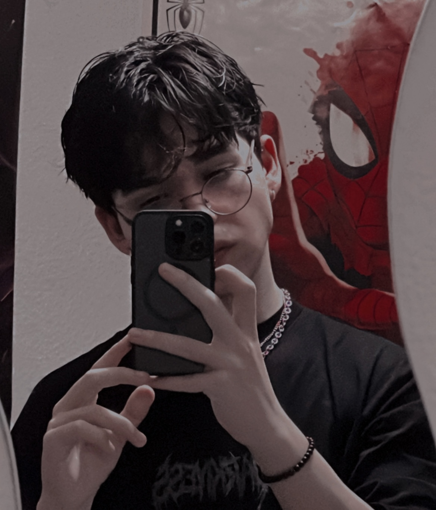
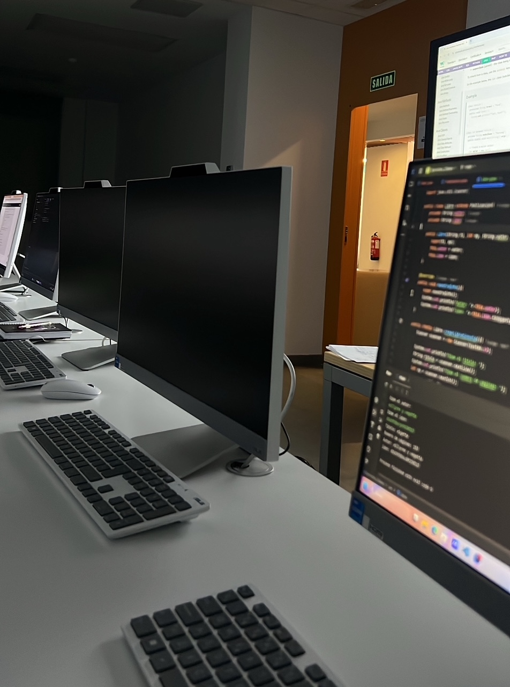

HOME PAGE

ABOUT ME
I began my career as a programmer while studying Computer Engineering. However, after discovering my passion for UX/UI design and development, I decided to expand my knowledge independently and later pursue a Higher Degree in Web Application Development (DAW).
WORKING...
Currently, I am continuing my education at Atlántida CIDEP, but I always keep an eye on the future. I am committed to further developing my skills and pursuing my goals, with a clear vision of what I want to achieve. I believe in the importance of lifelong learning, and I am focused on expanding my knowledge and experience in order to stay ahead in the ever-evolving tech and design landscape.
